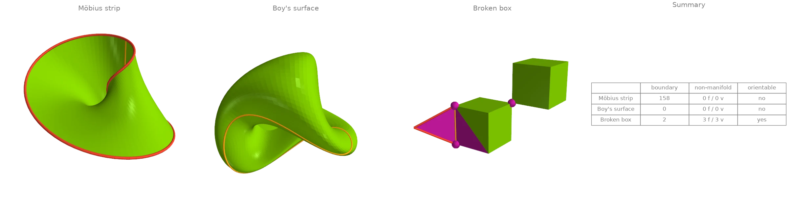
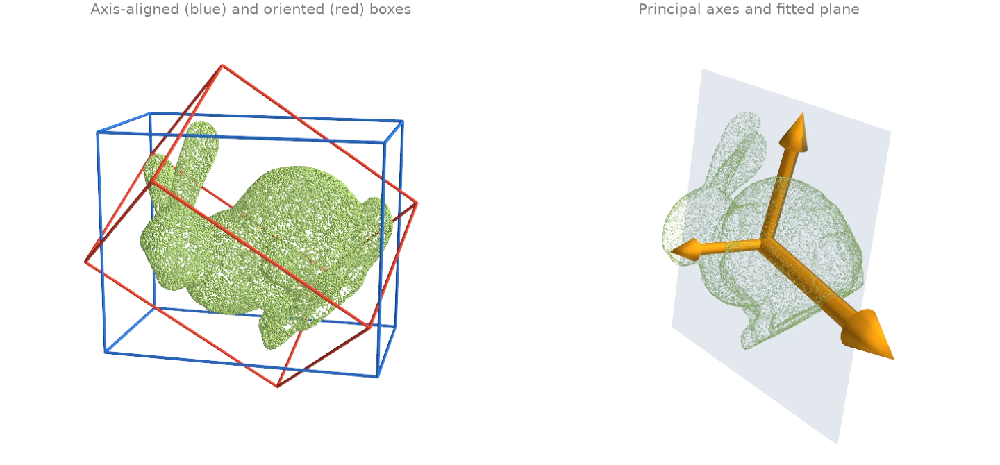
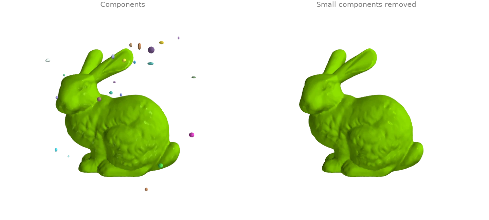
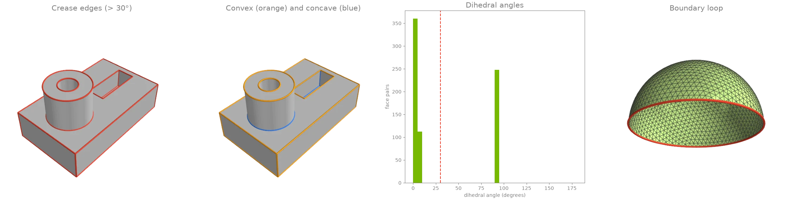
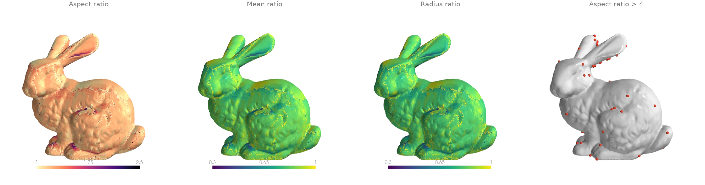
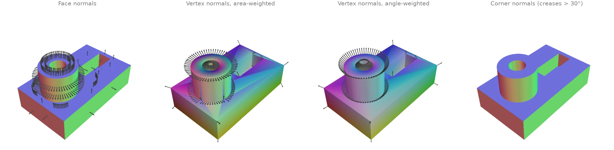
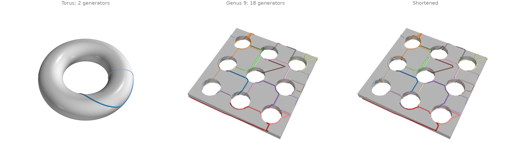
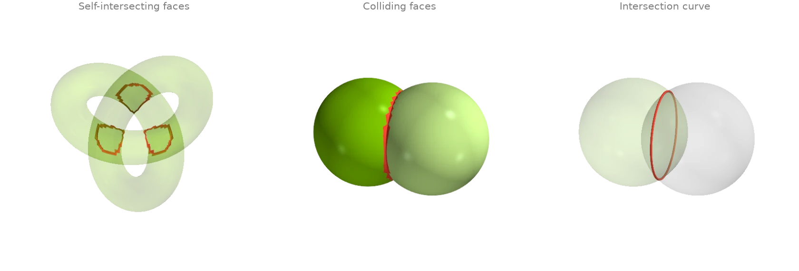

Inspecting meshes
Topology, validity, components, normals, quality and bounding volumes.
Validation masks: boundaries, non-manifold elements, orientation
Three small meshes, each broken in a different way. The Möbius strip has one boundary loop and
no consistent orientation, Boy's surface is closed but non-orientable, and the broken box has
a fin on one edge (an edge with three faces) and two cubes meeting at one corner (a vertex
whose faces form two fans). The per-element masks locate each defect:
face_watertight_mask,
edge_manifold_mask,
vertex_manifold_mask and
edge_winding_consistent_mask;
boundary_edges lists the rims and
is_orientable gives the global verdict.
import ordito as od
from examples import data
results = {}
for name in ("mobius", "boy", "broken_box"):
vertices, faces = data.load(name, device)
results[name] = {
"open_faces": ~od.validation.face_watertight_mask(faces).numpy(),
"non_manifold_faces": ~od.validation.edge_manifold_mask(faces).numpy(),
"non_manifold_vertices": ~od.validation.vertex_manifold_mask(vertices, faces).numpy(),
"boundary_edges": od.boundary.boundary_edges(vertices, faces).numpy(),
"orientable": od.validation.is_orientable(faces),
"inconsistent_edges": int(
(~od.validation.edge_winding_consistent_mask(faces).numpy()).sum()
),
}
m = results[name]
print(
f"{name}: {len(m['boundary_edges'])} boundary edges, "
f"{m['non_manifold_faces'].sum()} faces on non-manifold edges, "
f"{m['non_manifold_vertices'].sum()} non-manifold vertices, "
f"{m['inconsistent_edges']} edges wound the same way by both faces, "
f"orientable: {m['orientable']}"
)
mobius: 158 boundary edges, 0 faces on non-manifold edges, 0 non-manifold vertices, 79 edges wound the same way by both faces, orientable: False
boy: 0 boundary edges, 0 faces on non-manifold edges, 0 non-manifold vertices, 79 edges wound the same way by both faces, orientable: False
broken_box: 2 boundary edges, 3 faces on non-manifold edges, 3 non-manifold vertices, 0 edges wound the same way by both faces, orientable: True

Magenta faces touch an edge used by three faces, magenta dots are non-manifold vertices, red edges are boundary edges and orange edges are traversed in the same direction by both of their faces (where the orientation flips). Both ends of the fin's edge are reported as non-manifold vertices along with the shared corner.
Modelled on: Open3D: mesh properties · PyVista: mesh quality
Bounding boxes, principal axes and a fitted plane
A bunny point cloud turned about a skew axis. The axis-aligned box from
aabb grows with the tilt; the oriented box from
oriented_bounding_box searches orientations for the
smallest volume and does not. principal_axes gives the
covariance frame (drawn at three times the standard deviation along each axis), and
fit_plane the least-squares plane, whose normal is the least
spread axis.
import numpy as np
import ordito as od
from examples import data
points = data.load_points("tilted_bunny_cloud", device)
aabb_lower, aabb_upper = od.bounds.aabb(points)
rotation, obb_lower, obb_upper = od.bounds.oriented_bounding_box(points)
axes, scatter, centroid = od.points.principal_axes(points) # scatter = n - 1 times variance
plane_normal, plane_origin = od.points.fit_plane(points)
aabb_volume = np.prod(np.array(aabb_upper) - np.array(aabb_lower))
obb_volume = np.prod(np.array(obb_upper) - np.array(obb_lower))
print(f"axis-aligned box volume {aabb_volume:.3e}, oriented box volume {obb_volume:.3e}")
deviations = np.sqrt(np.array(scatter) / (points.size - 1))
print(f"standard deviations along the principal axes {deviations}")
axis-aligned box volume 3.221e-03, oriented box volume 2.396e-03
standard deviations along the principal axes [0.04859596 0.03405995 0.02667325]

Modelled on: Open3D: bounding volumes · trimesh: examples · libigl 910
Connected components: label, split, remove debris
The bunny scan is surrounded by small floating blobs, the debris a scanner leaves behind.
face_connected_component_labels gives
every face the label of its edge-connected component, split cuts the
mesh into one mesh per component, and
remove_small_components drops every component
below a face count (or area, or diameter) in one call.
import numpy as np
import ordito as od
from examples import data
vertices, faces = data.load("bunny_debris", device)
labels = od.adjacency.face_connected_component_labels(faces)
parts = od.combine.split(vertices, faces)
sizes = sorted((part_faces.shape[0] // 3 for _, part_faces in parts), reverse=True)
print(f"{len(parts)} components; the largest has {sizes[0]} faces, the next {sizes[1]}")
clean_vertices, clean_faces = od.repair.remove_small_components(vertices, faces, min_faces=1000)
print(f"kept {clean_faces.shape[0] // 3} of {faces.shape[0] // 3} faces")
41 components; the largest has 69451 faces, the next 80
kept 69451 of 72651 faces

Modelled on: Open3D: connected components · PyVista: connectivity · PyMeshLab: filters
Feature edges: creases, convexity and boundaries
face_adjacency pairs the faces that share an edge;
face_adjacency_angles measures the dihedral angle
across each pair and
face_adjacency_convex says which way it folds.
crease_edges keeps the edges that bend by more than a threshold
angle in one call, and boundary_loops orders the edges used
by a single face into closed rims.
import numpy as np
import ordito as od
from examples import data
vertices, faces = data.load("cad_part", device)
adjacency, shared_edges = od.adjacency.face_adjacency(faces, return_edges=True)
angles = od.adjacency.face_adjacency_angles(vertices, faces, adjacency)
convex = od.adjacency.face_adjacency_convex(vertices, faces, adjacency, shared_edges)
creases = od.seams.crease_edges(vertices, faces, angle=30.0)
sharp = angles.numpy() > np.radians(30.0)
print(
f"{creases.shape[0]} crease edges: {(sharp & convex.numpy()).sum()} convex, "
f"{(sharp & ~convex.numpy()).sum()} concave"
)
rim_vertices, rim_faces = data.load("hemisphere", device)
loops = od.boundary.boundary_loops(rim_vertices, rim_faces)
print(f"hemisphere: {len(loops)} boundary loop of {loops[0].shape[0]} vertices")
248 crease edges: 176 convex, 72 concave
hemisphere: 1 boundary loop of 96 vertices

Modelled on: PyVista: extract edges · trimesh: examples · PyMeshLab: filters
Triangle quality
face_quality scores the shape of every triangle of the bunny
scan. The aspect ratio (circumradius over twice the inradius) is 1 for an equilateral triangle
and grows without bound for a sliver; the mean ratio and the radius ratio run the other way,
from 0 for a degenerate triangle to 1. The scan is mostly well shaped, with a scatter of
slivers where the scanner's patches were stitched.
import numpy as np
import ordito as od
from examples import data
vertices, faces = data.load("bunny", device)
aspect = od.triangles.face_quality(vertices, faces, "aspect_ratio").numpy()
mean_ratio = od.triangles.face_quality(vertices, faces, "mean_ratio").numpy()
radius_ratio = od.triangles.face_quality(vertices, faces, "radius_ratio").numpy()
print(f"aspect ratio: median {np.median(aspect):.3f}, worst {aspect.max():.1f}")
print(f"{(aspect > 4).sum()} of {aspect.size} faces have an aspect ratio above 4")
aspect ratio: median 1.231, worst 1666.9
85 of 69451 faces have an aspect ratio above 4

Modelled on: PyVista: mesh quality · PyMeshLab: filters · libigl 701
Normals: per face, per vertex, per corner
Four ways to put normals on a machined part, coloured by direction (red, green, blue for
the x, y, z components). face_normals_and_areas
gives one flat normal per face. vertex_normals averages
them per vertex, weighted by face area or by the corner angle: area weighting leans towards
the long triangles of a flat side, angle weighting does not depend on how a flat side was
triangulated. Both smear a crease. corner_normals keeps
one normal per face corner and averages only over faces not separated by a
crease_edges edge, which is what a renderer with hard edges
needs.
import numpy as np
import ordito as od
from examples import data
vertices, faces = data.load("cad_part", device)
face_normals, _ = od.triangles.face_normals_and_areas(vertices, faces)
area_weighted = od.vertices.vertex_normals(vertices, faces, weighting="area")
angle_weighted = od.vertices.vertex_normals(vertices, faces, weighting="angle")
creases = od.seams.crease_edges(vertices, faces, angle=30.0)
corner = od.triangles.corner_normals(vertices, faces, creases) # (n_faces, 3) normals
gap = np.degrees(
np.arccos(np.clip((area_weighted.numpy() * angle_weighted.numpy()).sum(1), -1, 1))
)
print(f"area- and angle-weighted vertex normals differ by up to {gap.max():.1f} degrees")
area- and angle-weighted vertex normals differ by up to 41.9 degrees

Modelled on: libigl 201 · Open3D: vertex normals · PyVista: compute normals
Homology generators: handles and tunnels
homology_generators returns a basis of the loops
that cannot be shrunk to a point on a closed surface: two per handle, so a torus has 2 and the
slab with nine tunnels has 18. The basis comes from a tree-cotree construction, so its loops
follow the spanning trees and wander; shorten_loop
pulls each one tighter along the mesh edges without changing its homotopy class. A basis
loop that winds around several tunnels at once stays long: shortening cannot turn it into a
loop around one tunnel, because that is a different class.
import numpy as np
import warp as wp
import ordito as od
from examples import data
torus_vertices, torus_faces = data.load("torus", device)
torus_loops = od.homology.homology_generators(torus_vertices, torus_faces)
print(f"torus: {len(torus_loops)} generators (genus {len(torus_loops) // 2})")
vertices, faces = data.load("handles", device)
loops = od.homology.homology_generators(vertices, faces)
short_loops, sweeps = od.geodesic_walk.shorten_loop(vertices, faces, loops, max_iter=500)
print(f"slab: {len(loops)} generators (genus {len(loops) // 2})")
def length(loop: wp.array[wp.int32]) -> float: # closed polyline length
points = vertices.numpy()[loop.numpy()]
return np.linalg.norm(points - np.roll(points, 1, axis=0), axis=1).sum()
before, after = sum(map(length, loops)), sum(map(length, short_loops))
print(f"total loop length {before:.1f} before shortening, {after:.1f} after ({sweeps} sweeps)")
torus: 2 generators (genus 1)
slab: 18 generators (genus 9)
total loop length 485.8 before shortening, 451.2 after (11 sweeps)

Modelled on: MeshLib: tunnel detection
Self-intersections and mesh-mesh collisions
A trefoil tube too thick for its path passes through itself where the strands cross;
face_self_intersecting_mask flags every face
that crosses another face of the same mesh. For two separate meshes,
collision_masks flags the faces of each that touch the
other, and mesh_with_mesh returns the intersection
curve as segments. The two overlapping spheres come out of one input buffer through
split.
import ordito as od
from examples import data
vertices, faces = data.load("fat_knot", device)
crossing = od.validation.face_self_intersecting_mask(vertices, faces)
print(f"knot: {crossing.numpy().sum()} of {faces.shape[0] // 3} faces cross another face")
(vertices_a, faces_a), (vertices_b, faces_b) = od.combine.split(
*data.load("two_spheres", device)
)
hit_a, hit_b = od.intersection.collision_masks(vertices_a, faces_a, vertices_b, faces_b)
curve = od.intersection.mesh_with_mesh(vertices_a, faces_a, vertices_b, faces_b)
print(f"spheres: {hit_a.numpy().sum()} + {hit_b.numpy().sum()} colliding faces")
print(f"intersection curve: {curve.shape[0]} segments")
knot: 580 of 25600 faces cross another face
spheres: 148 + 148 colliding faces
intersection curve: 148 segments

Modelled on: MeshLib: mesh collision · libigl 903 · PyVista: collision